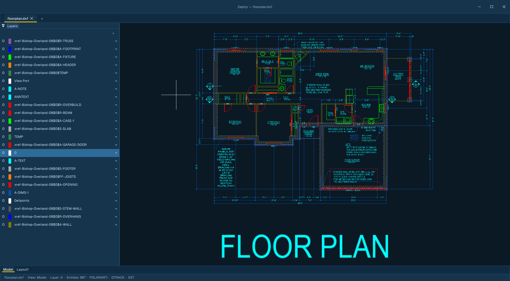
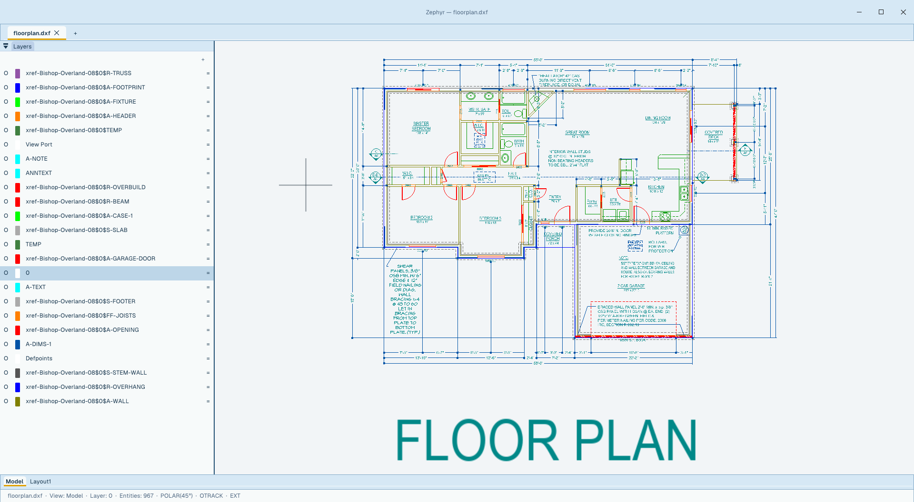

Zephyr is a GPU‑accelerated 2D drafting app written from scratch in Swift. It opens and writes DWG and DXF, runs natively on macOS, Windows and Linux, and is free and open source. It is also a 0.1 in active development — see who it's ready for today.


Zephyr is free, open-source (GPL v3) 2D drafting software in active development — v0.1, updated nightly. It is not finished, and it is not the right move for every AutoCAD LT seat today.
So here is the honest version, role by role: what works now, what to check on your own files before you rely on it, and where you should keep LT for the time being. Status as of November 2026; this page changes as the software does.
The same limits as LT apply, on purpose: Zephyr is 2D only. There is no 3D, no discipline-specific toolset, and no way to create parametric constraints (LT can't create them either; our solver is still in development). If those are the reason you'd leave LT, Zephyr is not the answer today.
In LT you spend the day producing and revising 2D drawings: draw, modify, dimension, annotate, keep layers and blocks tidy, plot.
The aliases your fingers know (L · PL · C · REC · M · O · TR · J and the rest), snaps, polar and object-snap tracking, grips, layers with viewport overrides, blocks with in-place editing (BEDIT), dimensions, multileaders, tables, layouts, and PLOT/PUBLISH to PDF. DWG and DXF round-trip; core AutoLISP routines run.
DWG needs a one-time ODA converter install (INSTALLODA) — native in-process DWG is on the roadmap, not shipped. Test-plot a sheet with your own CTB/STB tables, and work on copies while you learn where the rough edges are. Nightly builds move fast.
In LT you produce floor plans, elevations, sections and details, coordinate consultant drawings as xrefs, and issue plotted sets.
External references with a proper palette — status, reload flags, clipping, Bind/Detach — plus image and PDF underlays, paper-space layouts with viewports, page setups, sheet sets (.dst), and batch PUBLISH to multi-sheet PDF.
Run one small job end to end — title blocks, xref updates, a full plotted set — and open the output back in LT or your usual viewer before anything is issued. In-place xref editing (REFEDIT) isn't there yet: open the source drawing, or Bind. PDF underlays render at a fixed resolution rather than re-rendering as you zoom.
Mechanical, electrical, civil and structural 2D work in LT: part and assembly drawings, schematics, schedules, details that other people build from.
Precise geometry including NURBS splines, arrays, MEASURE/DIVIDE and hover Quick Measure; the full dimension set with styles, multileaders, tables, attributed blocks, and real SHX text so vendor drawings read the way they were authored.
Your symbol and block library is the test: open your most complex library drawings, edit copies, save, and verify them in LT before trusting the round-trip. If your standards lean on a specific annotation or tolerance workflow, prove it on one real drawing first. Like LT, there are no discipline toolsets here — this is general 2D drafting.
In LT you open what consultants and suppliers send you, check dimensions, produce as-builts and shop sketches, and print PDFs for the field.
Opens DWG, DXF and PDF; hover measurement with MEASUREGEOM; image and PDF underlays for tracing and as-builts; CLEANSPECKLES (CS) to sample a stray mark from a scanned drawing and erase every match; PDF export with a Bluebeam-compatible measurement dictionary, so the next person can take quantities off your file.
DWF and DGN underlays don't render yet. And for anything contractual, round-trip a copy and compare it in your current viewer before a Zephyr-saved file goes out the door.
Interiors, space planning, exhibits and fabrication drawings in LT: layout plans built from block libraries, schedules, and sheets someone else prices or builds from.
Plan layout with blocks and attributed blocks, image and PDF underlays to draw over, hatches and gradient fills with true-color support, tables for schedules, and the same layouts/plotting path as everyone above.
Test your block library and a plotted sheet first, like everyone else on this list. And be clear about scope: there is no 3D or rendering here — same as LT — so if your workflow depends on visualization, you'll still need other tools beside either one.
Found a gap that blocks your role? File it — that list is what sets the roadmap order.
Runs natively on macOS (Metal, universal binary), Windows (Direct3D 12, x64 and ARM64 — including Snapdragon/Surface machines) and Linux (Vulkan, x64 and ARM64; AppImage, Flatpak, Snap or portable zip). Portable downloads, no account, no telemetry. Other free 2D tools are worth your time too — QCAD, LibreCAD, FreeCAD and SolveSpace among them; try more than one on the same pilot job and keep the one that survives your files.
DWG and DXF — round‑trip ready, including blocks, layers, hatches, splines/NURBS, polylines with bulge, and external references. PDF export ships a Bluebeam‑compatible Measurement dictionary so dimensions survive the handoff.
Attach drawings, images, and PDFs as live references with ATTACH. Your host file stores paths only; referenced geometry renders from a runtime copy that never bakes into saves or undo. Edit the source and the palette flags it for reload.
Deleting a placement leaves the reference listed as Unreferenced — same as AutoCAD. Detach removes it for good; Bind (or Embed for media) makes it permanent.
Loading is asynchronous and capped (32 drawing xrefs, depth 16, 5M primitives per tab) so a heavy reference set can't stall the canvas. Paths save relative by default (REFPATHTYPE), dependent layers arrive as Xref|Layer under VISRETAIN, and XDWGFADECTL dims reference geometry so your own linework stays readable. Clips write back as standard SPATIAL_FILTER objects.
The core commands and aliases you muscle‑memorized in AutoCAD work here — L, PL, C, REC, M, O, TR, J and the rest of the everyday set.
Put a reference drawing on a second monitor, compare two jobs side by side, or keep Model and a paper layout visible in two panes of the same main window. Zephyr stays one editing session with exactly one active drawing—and, in a split, one focused pane.
Split layouts belong to the main window. Floated drawings are not split further, and split/float arrangements are session state rather than named configurations.
Tabs, panels, buttons, flyouts, their order and their labels live in lisp/ribbon.lsp. Edit it, save, and the ribbon rebuilds in place — no build, no restart, and a definition that fails to parse leaves the previous one working. Every entry names a command, so your own c: routines go onto a button in one line.
A native AutoLISP engine with the full inventoried builtin set — verified against every documented example. Routines written for full AutoCAD run unmodified: entity creation and editing, selection sets, system variables, file I/O, dictionaries, layer states, and scripted (command …) calls.
Identical behavior on macOS, Windows, and Linux. Routines that reach for Tier‑2 features we haven't built yet — DCL dialogs, reactors, most of the vla‑* object model — report a clean error instead of failing silently, so you find out at load time, not mid‑job.
It is not only drawing automation: the ribbon and its File / Edit / View menu bar are an AutoLISP file too. See how the ribbon is defined →
Function-by-function status lives in the reference and changes between builds. If a routine you depend on uses DCL dialogs or reactors, assume it won't run yet and check there first.
Zephyr is GPL v3. Free to use, free to fork, free to ship inside your shop. Paid support (priority bug fixes, technical help) comes later — the app itself never costs money.
Free download. No account, no telemetry, no email gate. Open a copy of a finished job, do your usual work, plot it, and check the result in the tools you already trust. That's the only test that counts.